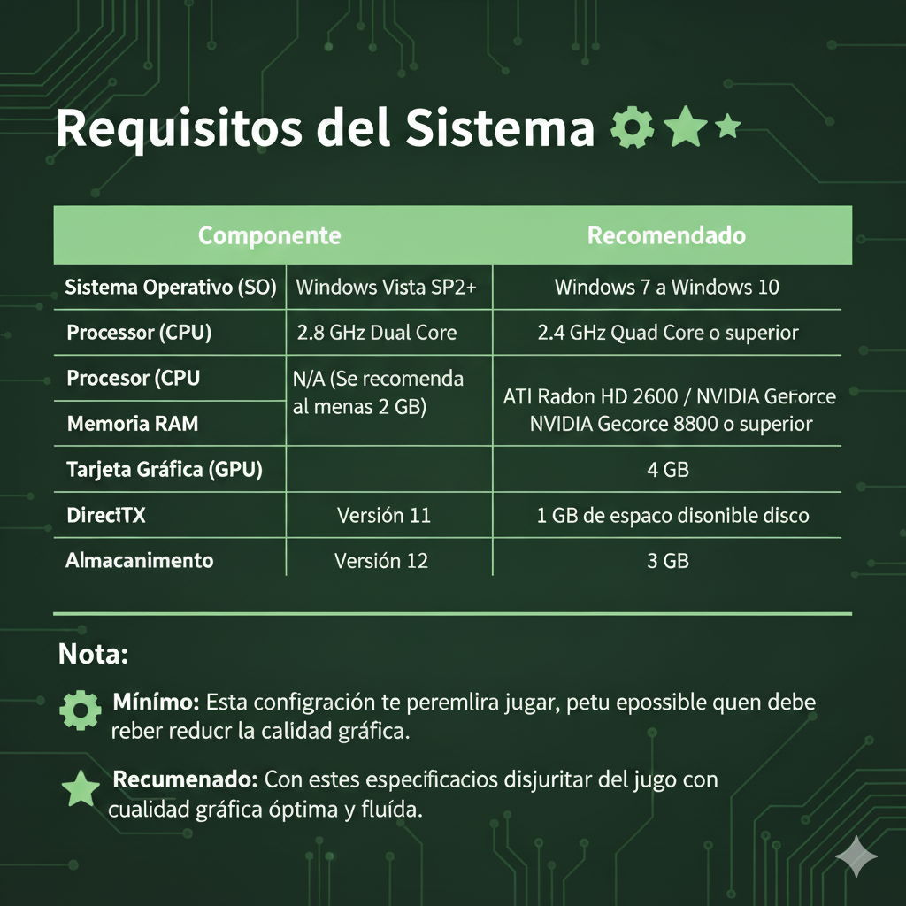

Inicio
Requisitos
Manual
Videos
Descargar
Contacto
¡Prepárate para Jugar! Requisitos del Sistema üíª
Bienvenido/a a la experiencia. Para que tu aventura sea fluida y disfrutes de cada detalle de nuestro juego, asegúrate de que tu equipo cumple con las especificaciones técnicas.
A continuación, encontrarás los requisitos mínimos para poder ejecutar el juego y las especificaciones recomendadas para una experiencia óptima y sin interrupciones.

Descargar